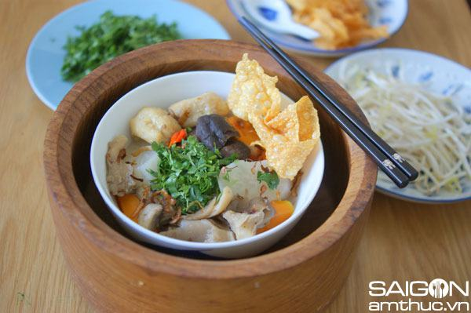

Cùng bắt tay làm thử thôi nào!
Nguyên liệu (cho 4 tô):
Nước dùng:
- 3 trái lê
- 3 trái táo
- 1 cây boaro
- 2 củ cà rốt
- Rửa sạch trái cây, chẻ làm 3 làm 4 và cho vào nồi, đổ nước quá mặt trái cây và hầm lấy nước
Phần nhân cho món hủ tiếu:
- 5-6 tai nấm đông cô
- 7 miếng đậu hủ đã chiên sẵn
- 5 cái nấm tròn trắng (champion mushroom)
- 6 tai nấm bào ngư (oyster mushroom)
- Cải khô – cải xá bấu (chinese leave khô) Tanjin Preserved Vegetable: 1-2 muỗng canh
- Ngò
- Boaro dùng để phi vàng
- Phù trúc (váng đậu khô hay tàu hủ ky) chiên vàng
Cách làm:
- Sau khi hầm xong nồi nước thì các bạn lọc bỏ bã lấy nước
- Bắc nồi nước đã lọc lên, cho nấm đông cô cắt bỏ chân và cắt làm đôi, cùng với cà rốt và củ cải trắng, và cải xá bấu. Cho ngò rí xắt nhỏ vào.
- Cho thêm 1 muỗng canh muối, 1 cục đường phèn, chút bột nêm nấm và hầm mềm.
- Phi boaro cho vàng để riêng trong 1 tô nhỏ
- Dùng dầu đã phi boaro, xào đậu hủ chiên, nấm trắng và nấm bào ngư trong 1 nồi khác, cho chút tiêu và sau đó cho nước dùng đã nấu sẵn và xâm xấp mặt nấm để cho liu riu trên bếp
- Chiên một ít phù trúc cho vàng, rửa giá, xắt ớt, chanh.
- Sau khi cà rốt và củ cải trắng đã chín, cho boaro phi vàng vào nồi nước dùng cho thơm, nêm nếm vừa ăn lại với bột nêm nấm, đường, muối tiêu cho vừa ăn.
- Hủ tiếu khô ngâm nước, giờ lấy ra trụng (chần qua) nước sôi cho chín và bỏ vào tô, cho các loại nấm, đậu hủ, ngò xắt nhỏ, boaro phi vàng, chan nước dùng lên và cho phù trúc lên. Ăn chung giá, rắc thêm ngò hay phù trúc (tàu hủ ky) nếu thích.